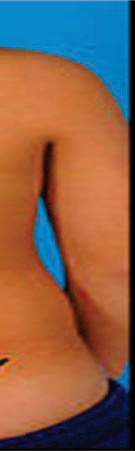
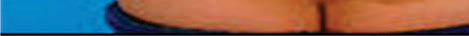
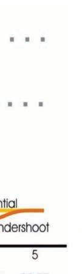
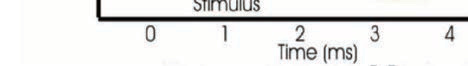
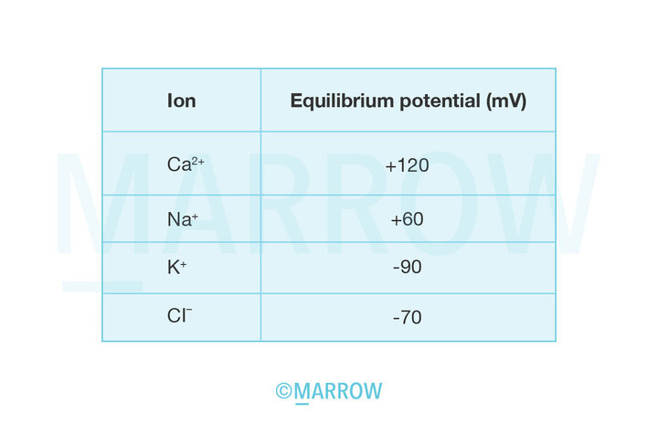

<html><head><title>Physiology</title><style>body{font-family:sans-serif;padding:20px;background:#f4f4f9}.chapter{background:white;padding:20px;margin-bottom:30px}.q{border-bottom:1px solid #ddd;padding:15px}.correct{background:#d4edda}</style></head><body><h1>Physiology</h1><div class='chapter'><h2>Motor Physiology - 1</h2><div class='q'><p><b>Q36:</b>  „        ,                .           ? </p><div class=''>a) –   </div><div class=''>b)    </div><div class='correct'>c) ‰  </div><div class=''>d) ™   </div><p><i> 287 ƒ           . …              ...</i></p></div><div class='q'><p><b>Q37:</b>  ˆ             ____. </p><div class='correct'>a) ‰   †</div><div class=''>b)   †</div><div class=''>c) — </div><div class=''>d) ˆ   </div><p><i> • …    †                            ...</i></p></div><div class='q'><p><b>Q38:</b>  Å š                       ,   ,          . –         è     . ç                       ,       . „            è    ? 266 Answer Key Question No. Correct Option 267 Detailed Explanations </p><div class=''>a) ˆ‚‰        –</div><div class='correct'>b) ’      ’ è      †   </div><div class=''>c) ê        è     </div><div class=''>d) Ž  ‚  </div><p><i> …             †                . Å ’     ...</i></p></div></div><div class='chapter'><h2>Glomerular Filtration Rate, Renal Blood Flow, a...</h2><div class='q'><p><b>Q33:</b>          ”             :        —      _________  ˆè          ____  ‘            : </p><br><div class=''>a)     Š‹</div><div class=''>b)       </div><div class='correct'>c)           </div><div class=''>d) ‚           </div><p><i>  : ‚+,  ”: ‰+ ‚+                ç     ...</i></p></div><div class='q'><p><b>Q34:</b>  Š                ,           .      ç  ƒ . (Š         ‡••†ç  Å). 102 Answer Key Question No. Correct Option 103 Detailed Explanations                      ,     ,              ? 134     ,       †       ? 265  Š‹        </p><div class=''>a) ‚     </div><div class=''>b) ‘       </div><div class='correct'>c) ˜  </div><div class=''>d)       </div><p><i> Š ç  ƒ     ,        ,  ‹•    . Š ç  ƒ  = ‡/ ...</i></p></div><div class='q'><p><b>Q35:</b>                     ? Answer Key Question No. Correct Option 135 Detailed Explanations                       ‰    Š      †,        †       ?                „  , †          ‡        .     Å, ,     ƒ  . 630 Answer Key Question No. Correct Option 631 Detailed Explanations </p><div class='correct'>a)   ,  ,  </div><div class=''>b)  ,  ,   </div><div class=''>c)  ,   ,  </div><div class=''>d)  ,   ,  </div><p><i>           ,  Š ƒ+            . ê   ...</i></p></div></div><div class='chapter'><h2>Renal Tubular Functions, Urine Concentration an...</h2><div class='q'><p><b>Q31:</b>                 ?                      è           †è .      ‡  ’  (‚‡)?  „  †   ,  - -                            . Å   †     264 è ’ è   †     ‚ è  . „               ?   Å    ‚ …+                   ˆ  %        ‡ %             .      660 „    †   ƒ,          †     : </p><div class=''>a) „</div><div class=''>b)  </div><div class='correct'>c)   </div><div class=''>d) ‡ </div><p><i> “        ,  ,  Å      δ-    ,  - ...</i></p></div><div class='q'><p><b>Q32:</b>           : 101                _______  .  Å - -                       è          . „     ‚  '      è    ?    Å        ƒ? 584 Answer Key Question No. Correct Option 585 Detailed Explanations                   -        ? 629  è       †       ? Answer Key Question No. Correct Option 661 Detailed Explanations </p><div class=''>a) ƒ</div><div class='correct'>b) ƒ</div><div class=''>c) „    </div><div class=''>d) ‡†' </div><p><i>                     . è  -       ˆ...</i></p></div></div><div class='chapter'><h2>Female Reproductive Physiology</h2><div class='q'><p><b>Q17:</b>  ê                           ‚          Œ       ?  ‚                     ’“ . …       ƒ    ?    ê    “             ,            ”    ?                 ?  Œ      ________              ________          _____.  ƒ                          †     -     .     ______  “     ‚ Å ____           ,          , †       . „                 ?                        ? 294         ?            ’  ?      ’                   Å    :       _______  Å         ˆ‘–Š? 422                       ?                    „             ?  …      ____.     -       ‚   ‚ :   Ž      ____.  ‡    ƒ ƒ         _____          ç  ?             Å ?  „        †   ?  ‰            Š‹?  „            . „   †  †          ?  ˆŠ    †     ? d)             . Å   …    … ,     †  '     .                  ?  ê     ,        ?                                _______             ƒ ?  ‹            ?        ______ </p><br><br><br><br><div class='correct'>a) ‹    </div><div class=''>b) è </div><div class=''>c) è       </div><div class=''>d) ’    </div><p><i> † ƒ         .                .      ...</i></p></div><div class='q'><p><b>Q18:</b>  ê     :               ?  Å ç„--       - …  . Š                 -     .                     ?  Š            ________.                     . †             Å . † ,                 .                               ?  130 ‰    ,         ?  ê        ________        „    ? Answer Key Question No. Correct Option 202 Detailed Explanations  ƒ                        . †        ?               ?  „      ______  ‰    ____                      ?                                 ?      ’          ?                   ‡ -        ’        .      . 370 Answer Key Question No. Correct Option 371 Detailed Explanations  ”    •    ()                  .          ?  Å         ’             ? Answer Key Question No. Correct Option Detailed Explanations 423  Å              ƒ    ƒ   _____           „           ? 472 Answer Key Question No. Correct Option Detailed Explanations  Š        _____. 487  …          _________        ___.  ç ’ ‚    _____              ?  ƒ Å        Å    .   Å    ÅÅ    ˆ   ˆ Å    Å     ?               _______        _________  ‚            ,         Š‹?  „   †          ‚ . ƒ       †       ?           _____     ‚        ? 699  „   ,       Œ     ?          —        ?           ˆ     ƒ   ƒ            ƒ   †  † ?   ŠŽ--           -      .         …  .    Œ   …,          †       ?  è                ______ </p><div class='correct'>a) ’    </div><div class=''>b) è </div><div class=''>c) è       </div><div class=''>d)      </div><p><i> ê         . ê          (   )   ...</i></p></div><div class='q'><p><b>Q19:</b>    -      _____.     ‰      _____          ?  ê                           _____  Å              ?              -           _____                _____ 177           _____ 214  Å                     ?                     ?  „           ? 261             '  ,                        …- ?  311          ,           †,         †  ?         ‘        .                   ?   • è   è     :            ƒ    ç% ‡ˆ    ?  †•          ___.                     ________ 502       •Ž ‚    ______ 523       ‚  …ˆ‡        ?           ê  _____               ?  ƒ                ? 603  ‰             Š‹  ‹Š?      †     †    ?  ’       ,      _____   ” ‚ -     _____.            ?   ‚- -           ‰’‹         .                   ‡    ?     † ƒ ?   Œ                ?                ? </p><div class=''>a) ˆ  </div><div class='correct'>b)     </div><div class=''>c) …  </div><div class=''>d) ˆ   </div><p><i>   -        ‚  .          ‚ ...</i></p></div><div class='q'><p><b>Q20:</b>                    : 9   ˆ--       ‰        .               ,     ,        . ƒ     ,                  .           ? 24  38 Å ˆ„--              . Å            '  '      .                    ?  ˆ              ( )_____ 72  98 “    ,                     ?             _______.         ƒ                         ( Ž)  .       ƒ        _______           ( )               _______.  229 …                      .           ?  Å      ( )  _______ 245  „               ?  Å ’“- -               '  ,      …-   . Å             ,                  .                   ? Answer Key Question No. Correct Option 295 Detailed Explanations  ‹     ‡        †   Answer Key Question No. Correct Option 312 Detailed Explanations              ? 334   …       ‡Š         ‡ˆ /  a) 403 Answer Key Question No. Correct Option Detailed Explanations  450              ƒ     ?  ƒ            -        ________   ‚         :            ___.       ‚       † ?               ______ 560           Å  ? 581  ƒ                ?  626 ‰               ?  ƒ  †  †               Ž  . Å        . 657  Š †       †            ? 682               ?  Å     -                     _____ 715                   ? 733  749 … •--          ƒ †,     † . ‘†   †      ƒ . ‹                ƒ  .        ƒ            †  †   ?  •      _____ 768  787 •     - — -             ? </p><div class=''>a) Žè†   …†                </div><div class='correct'>b) Žè†         …†    </div><div class=''>c) Žè†        …†     </div><div class=''>d) Žè† ç        …† ç     </div><p><i>               ‚ . –         ‚  ...</i></p></div><div class='q'><p><b>Q21:</b>  ê     ,       ____. Answer Key Question No. Correct Option 10 Detailed Explanations  Å           Answer Key Question No. Correct Option 25 Detailed Explanations                  ?  …               ?             ?             .                        ?   ‘‘--                     ƒ              . ‚ ƒ   ,                   .               .      :  ƒ             ‰. ‡       ,           ? Answer Key Question No. Correct Option 215 Detailed Explanations  Å    :           ‚'     ? Answer Key Question No. Correct Option 246 Detailed Explanations  „        †   ?  Å               ______  ‰ -       ____________ .  ƒ      _______. Answer Key Question No. Correct Option 488 Detailed Explanations  “” ‡  – ê  ‚  ‘            . ’                 ?  541 „     ‚            - †  ______               ?   Å     Å           ,                  Å ?  ƒ    †„       ?  ‰              ?  „       ____.  ’     , —…  ʼnŠ, —…  ‰„Š, Š  ˜.…,  Š—Œ-  Œƒ /. ’       .   -    _____           è  ƒ‰     ™     è       β ?              ˆ              ˆ    ? Answer Key Question No. Correct Option 734 Detailed Explanations  … ”“--   †    †  †ƒ    . … ˆ   †     ƒ  ƒ   †   ƒƒ             †.             †  ƒ ?  Å                 ?  •                   ? </p><br><br><br><br><br><br><br><br><div class=''>a)          Œ</div><div class='correct'>b)   …†  </div><div class=''>c) ‘      </div><div class=''>d) ’   ç         </div><p><i>                      .  ‚    ...</i></p></div><div class='q'><p><b>Q22:</b>               ?  ‚ --                . ‡            / . ‚   ,          . …                    ?                    __________.  131 ‰ èè-  ,                       _______  ‚                   ?                   ?  „            ?        †   ?               ‰ -         _____  '' ‡  – ê             Š    ( Š)        _____  ŠŒ. Answer Key 524 Question No. Correct Option Detailed Explanations  „ ‰‰-  -         -        .   ƒ         ,     ‚- ,              ƒ  Å      . ‡    ‚     ‚ ƒ ƒ    ‚          ?  ‰             . ‰    ç  ,             .             .            Š   ?  ƒ          Å    Ž Å :  „                ?  ‰                  ?  ƒ ‚        /‹  _____. 658  ˆ    †           †           : Š = ˜.‚, —… =‚ÅŠ, Š—Œ-=‚… /. ’    -      .   Œç                     . Ž ‚  ,              .               ? 700           ?              †   †  †   ?                   . „            ,              . ‹                    ?                             ? </p><div class=''>a)   </div><div class=''>b)  </div><div class='correct'>c)  </div><div class=''>d) – </div><p><i>             .           ...</i></p></div><div class='q'><p><b>Q23:</b>               ?  ‚      „       Œ       _______ 73 c)  ê               ?                      ’                  178            _____          Š   ______ 230 Answer Key Question No. Correct Option Detailed Explanations            _____ 262                 ‹  ‰ƒ? 335              ‰ ’      ?      „            _______  ‚    . 503  ‘  †               :         ç  Š…?      Å              ?  ‚                        . ƒ      ,          . ƒ          ç            ? 604  ‰     ƒ      ?     ”               ?  –   †    †     ‡  ?  ƒ  …      :  Å †‹         è      .    è      ,     -    . ‡         Œ .              ?                          ? 750  „             ç  †  ?                      -     ? </p><div class='correct'>a)  </div><div class=''>b)  </div><div class=''>c)   </div><div class=''>d)     </div><p><i> Å   ,   →↑    ‡+ → ‡+            →  ...</i></p></div><div class='q'><p><b>Q24:</b>  39 Å ˆ†--           .          ‹                  ? Answer Key Question No. Correct Option 40 Detailed Explanations  ‘   ˆ  –            ? (               ) 74                    ? 99                    ________.  ‚                                ?  Å  –       ,          ”   †  ______  ‹è--   ,     Å ,        ‹•  .                  .                ?  Å       ‘       451  ‡ ‚ – ê  :  „ –‰-  -     ‚            — . ˆ † ,  ‚ ‚      .   †      ƒ        ? 542        ? 561            Ž     Å    Å   ? 582  ƒ            †„?  ‰         ? 627  è        ____  ’     †       , †   †   ? 683            …     …       ? Answer Key Question No. Correct Option 701 Detailed Explanations  716        _____.        ˆ    ƒ ?  ‚                   ? 769  788                ? </p><br><br><div class=''>a) ‘       Œ       </div><div class='correct'>b) è   </div><div class=''>c) ↓…‘…</div><div class=''>d) ↑–‹</div><p><i> …   ‹  ‡+  . …              ...</i></p></div><div class='q'><p><b>Q25:</b>  ‘   ˆ  –            ? Š  : ‘                                      .                        . Š            ?                ?  ‚                      ?  „           ?                            ?                    ƒ       _____  ”‚    ‚         :  „     ‚             † :    ê      :  Œ  Å      ,               ˆ . Œ      .  “                     : Answer Key Question No. Correct Option 605 Detailed Explanations  ‚           ,            . ‰          ?  …           ____  ˆ                † _____ Answer Key Question No. Correct Option 684 Detailed Explanations              è   ? Answer Key Question No. Correct Option 717 Detailed Explanations           †    ƒƒ? Answer Key Question No. Correct Option 751 Detailed Explanations  ‚                 ?   ‚‡- -          . †        ƒ             .                    ? </p><br><div class=''>a) —    </div><div class='correct'>b)     Œ     </div><div class=''>c) ’       </div><div class=''>d) Š  </div><p><i> 90         -         . ‚        ...</i></p></div><div class='q'><p><b>Q26:</b>  Ž       Œ              . ‘          (‡)_____ 75           ‚   132                     ?  ‚            ƒ                  ƒ ?  „       †        ?  ‹Ž--             .  ƒ              .                      ? 336  Å -   ƒ      ƒ                 ______  †    ‚  ‡     Ž   ‡    , ‚ ' ‡'   ˜:       ‚          ‚     ‚ ?             „ ?             ?  Å                              -   ______      †            ?  ‹                  ?  β †’             ? </p><div class=''>a) ‹ </div><div class=''>b)   </div><div class=''>c) ’    </div><div class='correct'>d)   </div><p><i> ‘           Å ‡. ”           : • ‘ ...</i></p></div><div class='q'><p><b>Q27:</b>  –          ç     Ž           . ‡        /                  ?  „        ______             -  179 ’              ? Answer Key Question No. Correct Option 180 Detailed Explanations  ƒ                      _________. 263                   .            ?  †   ,                      ______         : 504 Answer Key Question No. Correct Option 505 Detailed Explanations              :                ?          Å       Å      ˜ Œ  ‡ ˆ/….     „        _____  659 è                     ‹              ?             ? </p><div class=''>a) ‚˜</div><div class=''>b) ‚™</div><div class=''>c) ‡</div><div class='correct'>d) ‡‚</div><p><i> -    /                   . ‚     ...</i></p></div><div class='q'><p><b>Q28:</b>  -Å             : d) Answer Key Question No. Correct Option 76 Detailed Explanations              ? 100           _______________.  “     (“ )  ______       ?  452                   ?       ‚       ”  -•   †? 543            Š    ? 562             ? 583  ‹                ? 628       †       _____  ‹                     ? 770 Answer Key Question No. Correct Option 771 Detailed Explanations  789             ç ” ? </p><div class='correct'>a) ˆ                  .</div><div class=''>b)               .</div><div class=''>c) ‹Œ       .</div><div class=''>d)      .</div><p><i> -Å                            . 92 Physiology ...</i></p></div><div class='q'><p><b>Q29:</b>         ,      Å     ?                          ?  Å - -                  . „                   ’          ?       : Answer Key Question No. Correct Option 337 Detailed Explanations             ƒ ƒ          ?       ‚ ƒ      ‚       /        ? Answer Key Question No. Correct Option 544 Detailed Explanations  ‰ –“-  -            . †  ,                   „ „. …       ”.Œ           Œ“““ /.                   Š       ?  ƒ          Å   Ž Å :       „  _______.  „    †              ‹     _____.                 ç ” ? </p><div class=''>a)   </div><div class='correct'>b) ‹Œ</div><div class=''>c)     </div><div class=''>d) Žè†</div><p><i>      ,              . † ,            ...</i></p></div><div class='q'><p><b>Q30:</b>                    (  )      ?             _____ 133  Å ‹- -         Š       . „                         ?                        ? Answer Key Question No. Correct Option 453 Detailed Explanations                 ? Answer Key Question No. Correct Option 563 Detailed Explanations  ‚ Å    Å  “ “   ,  Å     ˆ     ‰         „?      †          ‹  ?              Œ ? Answer Key Question No. Correct Option 790 Detailed Explanations </p><div class='correct'>a) …  </div><div class=''>b) Š ç ”</div><div class=''>c) ê    </div><div class=''>d) Š     </div><p><i> Š              ƒ      ‰+. ,          ...</i></p></div></div><div class='chapter'><h2>Exercise Physiology</h2><div class='q'><p><b>Q1:</b>           ______                 ?     -                   ?                          ?         ,          ?                           ?                      ______          ________.           _______.                  ?                     _____      “    ,            ”   ______           ______    .          ______    .    γ-             ° -    , ________                ?             ?                   ?                     ?     - -         -   .                   ?          ______.         ?     _____              ?             ?         ___.               ?              ________              ,  ____.      ?             ?              ?          :                   ?                ?         ______               ?                ?                    ?                ?                     .   -      ( )  .      -                     ?                  ?                 -      _____ </p><br><br><div class='correct'>a) - / </div><div class=''>b) - / </div><div class=''>c)  - / </div><div class=''>d) - / </div><p><i>                           ...</i></p></div><div class='q'><p><b>Q2:</b>              ?                ?                  ?                           ?          %      ,            ?             -         ?               ?           _______.                 _____                ______          ______.                       .          ,                      ?              _____ c) d)          _______                    -   .          ? 290               ?          ?                     ?               ?           ______          (  )                ?           _____         :                      ?                 ________        -              _____.      ,              ____.              :                 ?          ?            ?             ?             :        ?             .          _____   --        ,            ,      .               .                     ?          ,          ?                   ?         ______         ______   - -      ,                   - Å .            ?       Å            ‚               . ƒ                  ,           Å  Å      Å   ? </p><div class=''>a) „- </div><div class='correct'>b) „-     </div><div class=''>c) … </div><div class=''>d) „   </div><p><i>  ,                 .     ...</i></p></div><div class='q'><p><b>Q3:</b>  Å  ‚      ______                ?                ’    ?  -         ______  ‚  ƒ           %        „. …        „?                      ?             -   ?                         .                      ?           ,                           _____  ' '      ' '      .        ' '     ______     ______  „               ______       Å      ‚  ?                . 257                          .                       ?                    .                  ?           ''      '' ?             -    ?   --                       .                 ?           Å             ______                 Å          (   )? a) c) d)          ,     ?    - -       .                    ,         . Å       (   )? 416          Å      ?                        ?                    _____.  Å   ,       ,           .         ?                    ______               ‚ ____.          ?             ?                   :               ?  ‚       ,     ______      .           _____  Å          ‚  :  Å ‚ƒ- -         . „     ,  …  ‚† / . ‡                  . Å                ?             ?                 ?      †           _____  ˆ                  ? a)               ‚          †    Å         . ƒ      Å         †         '        ? </p><div class='correct'>a) ‡   </div><div class=''>b) ˆ  ‰     </div><div class=''>c)    </div><div class=''>d) ‡      Å</div><p><i> Å  ‚                     .  ...</i></p></div><div class='q'><p><b>Q4:</b>  „   ‚      _____ 5             _____ 20  ‚      ,      ( )  ƒ„         (… )  †  .      ,                  ,   …    ,           ? 34             (     = )   /Å             /Å,              (‚)_______ 55 d)  …         ,     ƒ    ? 68               ‚+     ƒ  ? 93                _______ 126               ? 160  ‚              ? 173               ______ 198        Å           ‚ . ƒ               -       ? 210         _____. 225             Å       ? 241  „               ?                               ?      ‚         ? 307               Å ? 321         …  †        ? 330  Å‚          ƒ     _______. 352          (  „…)            365   - -  Å               .    Å              ? 383                      …     ? 399                            . Å            ? 417             : 434  Å            _______ 446              ? 468  ƒ         ______. 483  „  ‚    498         ___(   ). 519  Å        ______. 537             ? 556             ? 577  ‚            ,           . ƒ              ? 599  Å              „    ƒ ? 622      †        „…    . ƒ    ‚      „…       .  †    ‚    †? 652        _________ / . 678                 .                       ? 695  ˆ  -    ______ ? 711               ? 729  … ‡--    †       ,        .    ˆ  .      †  ˆ       †      ,       †   †? 745  „ , ƒ    ______ 764              ? 783  ƒ      Å                  ? 805 </p><br><br><div class=''>a) „‚  ‚     </div><div class=''>b) „‚  ‚     </div><div class=''>c) „‚  ‚     </div><div class='correct'>d) Å           Å    </div><p><i> „   ‚          . ê       ‚   . ’ ...</i></p></div><div class='q'><p><b>Q5:</b>  ‡           ,  ˆ„   ‰ŠŠ   ‰‹Œ . ç       ‚   ,  ˆ„     ‰ŽŒ .          ‚  .                    _____                  ?              (     = )   /Å             /Å. „               (‚) _____ a)  …              ( „/Å   )?          ,                      ?                ,     ?                  ?  ‚                ?            ______  †                      :                    ?  †                   ______.  „               ?                            ?  ƒ„- -              .          .                ?  ‚             '     '    ?                    ?       ƒ        ‚   …†‡ˆ        .                     ?            ,    Å                (   „…)?  …         †‚        ( ° ƒ)  ( †)_______ d)             …_____          ____  ‚                         ?           _____  ‚       ,             _____.                †   ‡      ˆ/      ‚   .‰. Š ‡        (ˆ/ /‰)?         ƒ.ƒƒ  ,                           ?         , ‚     ‚  Å    ‚       ?                 ?          ‰        Š,‹° ˆ   ?              _______  ‰      Š‹?      †               …  ?          †  ‡     †   ______               …   … ?  Å ‰‹- -                   Œ       -         .             ?                  ______             -    ‚,    ?               ______                   ?  Š      ‹       , Å      Å       ? </p><br><br><br><br><div class='correct'>a) ‚   ‹               ‚  </div><div class=''>b)   Œç     </div><div class=''>c)   -‚             </div><div class=''>d)   „ </div><p><i>       ‚        -Ž.               ...</i></p></div><div class='q'><p><b>Q6:</b>  „     ‚          _______     ,           _____              ?          …+      (‚)?  ‡                     ?                     ?              ______.  „               ?  ‚                  ?            ?  †            ?             . ˆ             . ˆ  †       .       ’         ?      -       ?  …         †    _____                         ____. 291         †   †                 , …       .                        ?               ?               ?                     _______              ‚    ?  ‰        ______     . a)  †             ____  ‚                 ?             .  ,       ,     ,    . Å         ƒ  . Å ƒƒ   ƒ     _____                 ____.  Å                . …        ,          .           ?                  ‰       Å   :  ‡        ƒ    _______  …                ,         ?     Å  ?  ƒ                ?  ‰             ?  ƒ        ˆ + _____  Ž è       ê   ‡  ________                ‡    ?  Ž        è      ?   ‚Å- -        ˆ  ‰Š†‹    .                         ?            † ?           ______                         ç    -   ?  Ž            Å      Å   ? </p><div class='correct'>a) è       ‚</div><div class=''>b) è      ‚ </div><div class=''>c) Š    </div><div class=''>d) „     ‚</div><p><i> „     ‚        .            ...</i></p></div><div class='q'><p><b>Q7:</b>  ˆ         ____.                - -    ( )?                         ?                      ?       ‹    Å%  Œ  . ‚  ç   ,         . /Å  .     Ž  („).                       ‡   ˆ? 94              ________. . ‚     ƒ. „     ….   †.             ______ 161  ‚                    ?  …     .  †                  ? 211              _______     ‡       ______  ˆ       † _____ 258                          ?       †______.           †  _______.   ‰ƒ ,         ?         _____             .          -‡ „…        - „        .        ?(/ „)?  ‰       Š, ‹ƒ‚  †  ‹ ƒ‚  ‡ †,        ?  ‹                _____  ˆ                 ‹‚/       Œ‚‚ .                             ? 435             ______  ƒ ’       ___.      ,             ___.  ƒ   ' ‡  :                     .          ,                ? 520      ,         :  ‡      _____       Å   Å    Å ?  ƒ                  ?  ‰          ?        ____  ˆ   †              _____.              Å–ˆ?  Ž      ______                 ˆ    ?  ‹   †     ______  ‹             ?                         (ê).                         ,        -     ç. ‘                   ç?   - -   Å     ‚       -       ‚         . ƒ      Å        -          ? </p><div class=''>a) Œ          </div><div class=''>b) ê         </div><div class=''>c) ‡               </div><div class='correct'>d) ‘  †       </div><p><i> ˆ              ,       .       ...</i></p></div><div class='q'><p><b>Q8:</b>                ? 6    °       _____ 21         _______ 35  „              ______ 56  Å      ‹  Ž    ç                 /Å .  Å%      Œ  ,     ? 69  Š                           ? 95   ‚ ‡         ______ 127            ‡  -           ?  ‚         -‹        ? 174        ˆ‰           Å   ' . ‡             ‰       ? 199  ƒδ         _____.  ƒ           _____ 226     _____ 242  „      †   ____                  ?  ‰     †      : 308                †               ? 322        ______ 331          ‚_____ 353   - -           . ‰/ „…   Å       ‡ „…           - „…        .  366            ( „…)      ˆ‰   ? a)     Å                ? 384               ? 400  Ž  Š(Š    )/  (  )  _____ 418   ‡- -               ˆ /‰.                   ,     ?              ,             . †   ,  -                             -   ƒ.              ,        ƒ     ,        447     ?              _____ 469            Œ  ______. 484           Ž     ‚     ‚  ‚  ‡  ‚   _____. 499                    :  ‡           _____ 538  ‰             . ‰ ,        .               ? 557       Å   Å       ? 578  ƒ                        ? 600  ‰            ? 623  ‡            †     ______ 653  ˆ   ’’     †   _____ 679            ______ 696  Å ‰‘- -               Œ          . ‡    ’    ƒ†‹ Ž“/ .                 ? 712   ˆ      ______ 730   †      ƒ         †? 746     -     ______ 765  784  ç           “                            ?  806 ƒ      Å        ? </p><br><br><br><br><br><div class=''>a) ê       Å          </div><div class=''>b) è     „</div><div class=''>c) ê    Å              ‚ </div><div class='correct'>d) ê       </div><p><i>         . „    „  ˆ  13 ê  „  „...</i></p></div><div class='q'><p><b>Q9:</b>                    ?   ‹               ?              ______  Œ                    ______  è                  ?             Å          ?    -               ‚ ‡          _______                     ______              ______                   ‰.    ‰               ?               ______.                       .                      ?  †          _____  …          _____  Å ˆ‰- -                          .             ,  ,          Š  ,       .                  ?  Š           __________  …    ‡              ?             -  ?       Œ ƒ      ƒ       ‚ ç .                     .            ?  Š      -Å ,  ‹ -Å  _____  ç             ,   Å     ______   …  -           _____           ‹ƒ‚ ‰,         „‰,    Œƒ‚ ‰,      ‹.ƒ ‰,       è‰,     ‹ƒ   /  . Å         ?         -                  ( Å  )      (   )? 436       _____                 ?    ,          _______.  Š           ‚       , _______  Ž  ‰        :            ƒ  _____               ?           Å Å   ?  ƒ              ,      ,        ?          .             ______  ƒ        _____  ‹           _____                  ?  Å ‰‹- -      è  . Å      ,               . ‡      è            ?        ______  ‹  ƒ ,     †     †    †    † . ƒ       ,       †  †     † ?     _______         Œ             …†   ”      ?  ƒ      Å                     ? </p><br><br><div class=''>a) Œ      </div><div class=''>b) „ -     </div><div class='correct'>c) Œ     </div><div class=''>d) Œ   Œ  </div><p><i>                  . ˆ      ...</i></p></div><div class='q'><p><b>Q10:</b>                     çŽ-è ‰   ?  Å çŽ--      -             .                     ?          ____  ‚  •              –        . …                  ?             ?               ______            ‡                  ________.  ‚            ?              ˆ    . Å          ˆ          . Å            ‹ .     ,       .                          ?  ‹          Å ______.           _______  † Å         Œ             ______  Š         †_____                       ? 292            ?                  ?               ?             ______.               _______          ____      …   ‡††%   …     (  )_____  ˆ         _____         -                     ( Å  )        (    )? 437           ƒ  _____              _______.  ƒ             _________.  † ‹- -  ‡         ‚ -/ . è   -     ‚  ‚      ‡. Š       (  ˆ/ )? (ê  ‰      ‰ )    ƒ            :       ‚    _______  Š   , +             ?  Å   Å  Š      Å       ?  ‚             :  ‰ ’                 ?      †     †         ?  ˆ    †                     . Š      •„/ƒ„  Š. –   †            †           ?      …             ?            ?              ______   † ƒ ˆ ƒ           ?     ç    †     ?  ’              ______  ƒ      Å        -        ? </p><br><br><div class='correct'>a) ‰   „ -ç     ‚</div><div class=''>b) ê      </div><div class=''>c) ê  ç   </div><div class=''>d) ’       „</div><p><i>              -  -   -   .        (...</i></p></div><div class='q'><p><b>Q11:</b>          ‘  ‚      ____              ____  …  ‹             .  Ž          -è‚          ? 57                       ?    Å                                 ?                             ? 128  „                       ______ 162                            . ‚       ƒ            ç   ?         †        ______.  Š-              _____. 212                      . ‘ ‚ ,                 .                ?            _____  …               ___. 259     : ç                 ___________        ___________ ?         ?                   ?         Œ                   ''                ''. ‚                    .             ?      ƒ                 .                   ?             -Å   Å  †    .                       ? 367  Ž/è =       Å   Å  ?       Ž†      ( )______   ŒŒ- -                - . ‘    ,   -     ’     . Å                                ?  ƒ   Å   _____             ____                ________  ƒ-                . ƒ      _______.  500 †     ‚        . Š ‡    ‚‚      ?  ‘                       . ’                    ? 521  ‡ †    ‚           ‰                    . ‰     ç       , :        Å        ?  †                ?  ‰                ?  ˆ     (/Œ)      (/)     ‚   _______, _________  ˆ     (ˆ)   _____  697  Œç           ,     ,     ,       ,                  .   -  Å-Å …   ….               ?                ______  Œ               ______               † ƒ     ?         ?  Žè†       _____  ƒ      Å           Å      ? </p><div class=''>a) Š    </div><div class='correct'>b) “          </div><div class=''>c) ê           ‚</div><div class=''>d) ê    </div><p><i> Œ’ ’      ‘  ‚     .           ‘  ...</i></p></div><div class='q'><p><b>Q12:</b>                 ‚? 7  è           _____ 22  è                  36                          ?  …            ? 70  „                ? 96               ______                                      ?  Ž           (Ž „ )        ______. 175  200               †ƒ„  ?  †  -           ____.  227              -ƒ’  ?  †            _____         . 243  …      †_____                   ?               ? 309                          . 323 a)              ? 332                 ƒ- .             ƒ       ? 354       –Å       ,          _________. 368  … ‚-ƒ‚   Å Å Å  -          .    Å                -       ‹‚  ‹‚? 385  è      …      _____ 401  419       _____  ç        _____  448                         _____                    ____. 470  ƒ            ,     ,          ___. 485     ‚      _____     è  ,                             : 539  ‰                 . ‰   ,     Ž -    .                  ? 558   -      Å     Ž      Å     ? 579  ƒ           ? 601  ‚          ,           . ‰         ? 624  ƒ   „…      †. è   . 654  ˆ           ____ 680         ?                  ? 713  †                    ? 731               †? 747  …        _______ 766  785  - -                . è ç                      . ˆ            -               ?  807 ê   (   )         (  )              _______. </p><br><br><br><br><div class=''>a) “   </div><div class=''>b) …    Å</div><div class='correct'>c) ‘     </div><div class=''>d) ”  ‚ </div><p><i> ˆ              ‚         . … ‚...</i></p></div><div class='q'><p><b>Q13:</b>         ‘     ?              _____  ‰+-ê+ Å    ________                      …+  ? 58  …                ?              ?  Š               . 129                   ?         ( „ )       ______           ?  ƒ  '                    . ƒ ‘      ,                .               ?      ______                  . †              ?  Å            † †  ______  Å                , ,                   . Œ    - -    - -       . Å                     ?                   †:             †             / ___________. Answer Key Question No. Correct Option 324 Detailed Explanations  Žè--           . ê    ,                 ň-   ƒ. „           †    ?             ? Answer Key Question No. Correct Option Detailed Explanations        ?     Å       ( ˆ †)     % .        Œ  .”, Å        ‹‚ ( †)? a)  ‘                 …  ?  Å                         ,      ?  ƒ         ,           Å     ______.       _____                 ?    “     ,                     .           Å            ‚   ‚          ‡ ____  Š         ƒ  ________                  ?               -        ?  ƒ           ?             ê                 = ç         =è…        =ˆ‡  ’         =†‡  ’       =‡  Å    †     , †   ‚           ?  ”               †                          . –   †         ?     …      ?  Ž         _____                 ?          ƒ   ˆ      ƒ ?  ‹             †   ?            ‡                       . è                          ?  Š      ‹        , ________. </p><br><br><br><br><br><br><div class=''>a)            - .</div><div class=''>b) ê                 ‚ .</div><div class='correct'>c)               ‚  .</div><div class=''>d) ê ‚   ,        .</div><p><i> 15        ‘   .      ‘ .  è     ...</i></p></div><div class='q'><p><b>Q14:</b>  † ƒ         ______                 ?                   ’?  ê, ‘, ’      . ê = -“   ‘ = -”. Š Œ‰‹,           ,       ’? Answer Key Question No. Correct Option Detailed Explanations  ‡     Š ƒ Å    Š ?                       Å  __________.                 ?  è             †              .         ˆ . 163 Answer Key Question No. Correct Option 164 Detailed Explanations                 :                ?                ________        † _____          ______     .       _____  293 Ž               ?     -   †          .             †?                           ?      ‹   (-/)______     Å       Å    ? 386  Œ    çƒ- -                             .        -        . Å          (   )? 420                  ÅÅ           ‹èèè        .                     ? 438 Answer Key Question No. Correct Option Detailed Explanations           ƒ            :           ___.             '          ? 486  …     ,    ‚          ______   Š ’  ,            = …    = „ ?  „                   ?              Å        ?       Å     ˆ     “    ?       ,                  ?         ?  „     ■    ‚  ‰ / Œ    –  /.                      †  †? 655  Ž      †          / ______________  "è    "  ʼn     :               ?   “Å- -      , ˆ ,    . ‰ ˆ  ,    ˆ         .     ‡ ˆ         .         ‡         ?   † ƒ    ƒ  ,     ƒ    †  †       .        †     †         ?   è--         .               . ‘     ,  '   '- †         ,       . ‹          †           ?  è       Œ  ______  ƒ      Å                     ? </p><div class='correct'>a) ‘          </div><div class=''>b) ‰     </div><div class=''>c) ê     </div><div class=''>d) Š „ Š </div><p><i> † ƒ          ‚   . † ƒ                ...</i></p></div><div class='q'><p><b>Q15:</b>   ƒ       ____.      Œ‘   ‰         . ƒ       .               _____  ‚ ‰+-ê+ Å       _____  ‡      ç       (    = )?         ?    -                _______.  „           ( „ )        _______ 176            :  †             ? 213  ”  †      -         . ˆ                     .                    ?      ,                 ?  „                ? 260           "   "                    .                  ?    ‡      _________.  Å        ______           ____     Å               (‚),      (ƒ‚)  †           ? Answer Key Question No. Correct Option Detailed Explanations      ,ƒ –è’     ______   ‹- -            .                    ,            –              .                  ? 421  Å                      ƒ   ______            :  ‰ '      ______.  501  ‚‚ ‚            ____.     ŠŒ,                    : 522  ‡  ‚      ______                     ?                  ?  ‹                     :  ‚     ,     †‡ /;     ˆ /;     ˆ… /. ‰         Š‹   ?                         ‚    Š  -     ___________    ‡        .  698 -              ?  Ž ,       _____( )   “”- -         ‰’‹           . ‰  ˆ  ,        ˆ      ˆ            '     .         ‡         ?  … †      ˆ   ƒ        ƒ    . ƒ    ,       †   †   ˆ ˆ-† †?   ’    ______             Žè†   …†      ? 786  ƒ      Å          ? </p><br><br><br><div class='correct'>a) „ </div><div class=''>b) ê        </div><div class=''>c) ‰    </div><div class=''>d) Š   ç-„     ‚</div><p><i>  ƒ          .  ƒ     -    .   ...</i></p></div><div class='q'><p><b>Q16:</b>                   (ˆ)? 8  ‚                 _________ 23  Å ç„--         ’ .                    ? 37  ‘  Œ                _____ 71  ‘      ‚            Å .        ,              ’ . ‘ Å            .                       ? 97            ______.  ‚                 ?                ? 201  †              ?  228      _______                ? 244  Š    † ____                      ?             ‡   ? 310        ________ 333                     ,    Å       ? 369       ‘     _____ 402      - (”)                (  )    ƒ - -       (  ). Å              ?  449                    ƒ            ______  ƒ           ,     ? 471  …      __________.             ‡ _______  ’     ŠŒ          ‰ ?  ˆ                     _____ 540  ‚   -     „              ? 559             ? 580  ‚              Š          .  ,      ,  ç  . ƒ               ? 602  625 Å    '     ˆ /. ‰                  †‡/     †‡‡/?  ƒ    † ™   †     ƒ  656                          681   Œç--               …         ‚   “.                “?  ‡          ? 714                ? 732  748        †    † ?              †  ? 767                       ?  808 Œ         (Š•)     Å     Å ,   Œç    /  ç    / . Answer Key Question No. Correct Option Detailed Explanations </p><br><div class='correct'>a) .–</div><div class=''>b) </div><div class=''>c) .</div><div class=''>d) .</div><p><i>     ‚            .             ...</i></p></div></div></body></html>